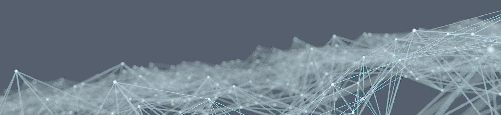

更新情報
- 今後の予定
- FUTURE2024/10/19-21 9th International Symposium of Quantum Beam Science at Ibaraki University (ISQBS2024)にて発表予定
- FUTURE2024/10/26-27 有機結晶シンポジウムにて共同研究の学生が発表予定
- FUTURE2024/11/08-10 日本結晶学会にて発表予定
- FUTURE2024/12/01-06 MRS Fall Meetingにて発表予定
- FUTURE2024/12/01-06 AsCA 2024にて共同研究の学生が発表予定
- 2024/09/12
- NEW住友財団・環境研究助成（一般研究）に研究課題が採択されました。
- 2024/09/12
- NEWKnowledge distillation of neural network potential for molecular crystalsがFaraday Discussions誌に掲載されました
- 2024/09/10
- NEWData-driven discovery in the chemical sciences Faraday Discussion(2024/09-10-12@UK・オックスフォード)に参加・発表しました。
- 2024/07/31
- NEW東北大学芥川先生・出倉先生らとの共著論文Proton Conduction in Chiral Molecular Assemblies of Azolium–Camphorsulfonate Salts がJACSに掲載されました
- 2024/04/01
- 科研費・若手研究に研究課題「機械学習によるHOF材料の安定性シミュレーション」が採択されました。
- 2024/03/19
- 日本化学会第104春季年会 (2024/03/18-21＠船橋)で依頼講演を行いました。
- 2024/03/18
- ペロブスカイト太陽電池の効率予測に機械学習を活用し各プロセス条件の貢献度を定量評価した論文がEnergy Advances誌に掲載されました
- 2024/01/10
- 分子性結晶の弾性率を機械学習ポテンシャルで予測した論文がCrystEngCommに掲載されました。
- 2023/11/23
- 第2回ソフトクリスタル研究会 (2023/11/23-24＠横浜)にて研究発表しました。
- 2023/11/03
- 第31回有機結晶シンポジウム (2023/11/2-3＠大阪)にて共同研究の学生が研究発表しました。
- 2023/10/29
- 令和5年度 日本結晶学会 (2023/10/27-29＠山口)にて共同研究の学生が研究発表しました。
- 2023/10/26
- ChemRxivに論文をアップロードしました。
- 2023/10/21
- 分子結晶の超弾性についてのBook Chapterが公開されました。
- 2023/10/16
- 分子結晶にグラフニューラルネットワークを適用した論文がACS Omegaに掲載されました。
- 2023/09/19
- JST ACT-X 研究領域「トランススケールな理解で切り拓く革新的マテリアル」にて研究課題が採択されました。
- 2023/08/29
- 26th IUCr (2023/8/22-29＠オーストラリア・メルボルン)で発表しました。
- 2023/07/20
- JST START SCORE大学推進型に提案課題が採択されました。
- 2023/07/18
- ChemRxivに論文をアップロードしました。
- 2023/07/13
- ChemRxivに論文をアップロードしました。
- 2023/07/10
- Digital Discovery誌の成果をプレスリリースしました。
- 2023/07/05
- Crystal Growth & Design誌のカバーアートに選ばれました。
- 2023/07/03
- 人工知能学会での発表成果が日刊工業新聞に掲載されました。
- 2023/06/22
- Digital Discovery誌に論文が掲載されました。
- 2023/06/07
- 人工知能学会(6/6-6/9)で発表しました。
- 2023/06/06
- 日本結晶学会誌に執筆記事が掲載されました。
- 2023/06/03
- Crystal Growth & Design誌に論文が掲載されました。
- 2023/05/02
- ChemRxivに論文をアップロードしました。
- 2023/03/25
- 日本化学会第103春季年会(3/22-3/25)で発表しました。
- 2022/11/27
- 令和4年度日本結晶学会(11/26-11/27)で発表しました。
- 2022/11/05
- ChemRxivに論文1と論文2をアップロードしました。
- 2022/11/04
- 第30回有機結晶シンポジウム(11/04-11/05)で発表しました。(連名)
- 2022/10/31
- AsCA2022(10/30-11/02)で発表しました。
- 2022/10/19
- 第12回CSJ化学フェスタ(10/18-10/20)で発表しました。(連名)
- 2022/03/26
- 日本化学会第102春季年会(3/23-26)で発表しました。
- 2022/03/18
- 科研費・若手研究に採択されました。
- 2022/03/18
- 八洲環境技術振興財団・研究助成に採択されました。
- 2022/01/13
- 論文成果をプレスリリースしました。（早稲田大学、茨城大学、芝浦工業大学のwebサイト）
- 2022/01/10
- 筆頭論文がCommunications Chemistry誌に掲載されました。
- 2022/01/04
- 2021年の学会発表情報を更新しました。
- 2021/07/12
- 早稲田大学―ENEOS シーズ探索研究助成に採択されました。
- 2021/04/01
- 早稲田大学データ科学センターの准教授（任期付）に着任しました。
- 2021/04/01
- Websiteを開設しました。
連絡先
- 郵送先
- 〒169-8050 東京都新宿区西早稲田1-6-1 1号館3階 早稲田大学データ科学センター
- takuya.taniguchi@aoni.waseda.jp
- TEL
- 03-5273-9549 (内線 71-5026)